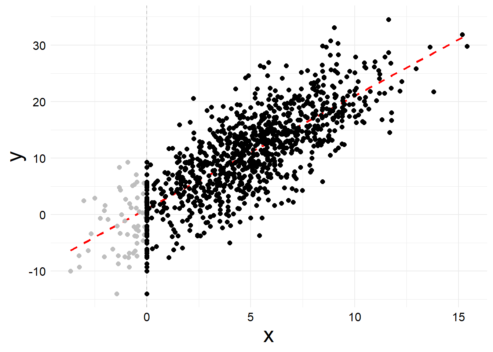

lod <- 0
generate_data <- function(n = 1000, xmin = 2, beta0 = 1, beta1 = 2, sigma = 5,
seed = 83719273) {
l <- tibble::tibble(
x_star = rnorm(n, 5, 3),
x = ifelse(x_star <= xmin, xmin, x_star),
mu = beta0 + beta1 * x_star,
y = rnorm(n, mu, sigma)
)
o <- dplyr::select(l, x, y)
out <- list("latent" = l, "observed" = o)
}
dat <- generate_data(xmin = lod)
dat_l <- dat$latent
dat_o <- dat$observed2 Example Model 1: One censored predictor
For our first example model, we will consider an example where we have a single censored predictor. Other than censoring, we assume the predictor is measured without error. We also assume a non-censored perfectly observed outcome, which follows a Gaussian linear model where the only predictor is that censored one. (We could add additional non-censored predictors but it would just make this example more complicated.) The data generating process for the outcome, \(y_i, \ i = \{1, 2, \ldots, n\}\) is \[ \begin{align*} y_i &\sim \mathrm{Normal}\left(\mu, \sigma^2\right) \\ \mu &= \beta_0 + \beta_1 x_i^* \end{align*} \] where \(x_i^*\) is the latent, true value of the predictor \(x\). However, because of some imperfect measurement process, we can’t observed \(x_i^*\), instead we observe \[ x_i = \begin{cases} x_{\min}, & x_i^* \leq x_{\min} \\ x_i^*, & x_i^* > x_{\min} \end{cases}. \] So if we want to correctly model \(y\), we will need to take the left censoring of \(x\) into account.
We can take a quick look at the data to see what the relationship looks like when x is censored or not.
dat_l |>
ggplot() +
geom_vline(xintercept = lod, linetype = "dashed", color = "gray") +
geom_line(
aes(x = x_star, y = 1 + 2 * x_star), color = "red", linetype = "dashed",
linewidth = 1
) +
geom_point(aes(x = x_star, y = y), color = "gray", size = 2) +
geom_point(aes(x = x, y = y), color = "black", size = 2) +
labs(x = "x", y = "y")
Here the gray points show the true latent values of the censored points, and the black points show what we actually observed. The red line is the true regression line from the data generating process.
For a Bayesian model, before we can fit anything to the data we need to choose suitable priors.
df_stan <-
dat_o |>
dplyr::mutate(
cens = factor(x <= lod, levels = c(FALSE, TRUE), labels = c('obs', 'cens'))
) |>
# Arrange by whether or not the data is censored. Getting the right format
# for Stan is kind of annoying.
dplyr::arrange(cens)
dat_stan <- list()
dat_stan$y <- df_stan$y
dat_stan$x_obs <- subset(df_stan, cens == 'obs')$x
dat_stan$N <- length(dat_stan$y)
dat_stan$N_obs <- length(dat_stan$x_obs)
dat_stan$N_cens <- dat_stan$N - dat_stan$N_obs
dat_stan$DL <- lodLoad and compile the stan program
library(cmdstanr)This is cmdstanr version 0.6.1.9000- CmdStanR documentation and vignettes: mc-stan.org/cmdstanr- CmdStan path: C:/Users/Zane/Documents/.cmdstan/cmdstan-2.33.1- CmdStan version: 2.33.1mod <- cmdstanr::cmdstan_model(stan_file = here::here('Ex1.stan'))fit <- mod$sample(dat_stan, seed = 100, parallel_chains = 4)Running MCMC with 4 parallel chains...
Chain 1 Iteration: 1 / 2000 [ 0%] (Warmup) Chain 1 Informational Message: The current Metropolis proposal is about to be rejected because of the following issue:Chain 1 Exception: normal_lpdf: Location parameter[981] is -inf, but must be finite! (in 'C:/Users/Zane/AppData/Local/Temp/Rtmp2ZX9B1/model-4cfc64664ead.stan', line 68, column 1 to column 19)Chain 1 If this warning occurs sporadically, such as for highly constrained variable types like covariance matrices, then the sampler is fine,Chain 1 but if this warning occurs often then your model may be either severely ill-conditioned or misspecified.Chain 1 Chain 2 Iteration: 1 / 2000 [ 0%] (Warmup)
Chain 3 Iteration: 1 / 2000 [ 0%] (Warmup)
Chain 4 Iteration: 1 / 2000 [ 0%] (Warmup)
Chain 1 Iteration: 100 / 2000 [ 5%] (Warmup)
Chain 1 Iteration: 200 / 2000 [ 10%] (Warmup)
Chain 2 Iteration: 100 / 2000 [ 5%] (Warmup)
Chain 3 Iteration: 100 / 2000 [ 5%] (Warmup)
Chain 4 Iteration: 100 / 2000 [ 5%] (Warmup)
Chain 1 Iteration: 300 / 2000 [ 15%] (Warmup)
Chain 2 Iteration: 200 / 2000 [ 10%] (Warmup)
Chain 3 Iteration: 200 / 2000 [ 10%] (Warmup)
Chain 4 Iteration: 200 / 2000 [ 10%] (Warmup)
Chain 4 Iteration: 300 / 2000 [ 15%] (Warmup)
Chain 1 Iteration: 400 / 2000 [ 20%] (Warmup)
Chain 1 Iteration: 500 / 2000 [ 25%] (Warmup)
Chain 2 Iteration: 300 / 2000 [ 15%] (Warmup)
Chain 2 Iteration: 400 / 2000 [ 20%] (Warmup)
Chain 3 Iteration: 300 / 2000 [ 15%] (Warmup)
Chain 3 Iteration: 400 / 2000 [ 20%] (Warmup)
Chain 4 Iteration: 400 / 2000 [ 20%] (Warmup)
Chain 4 Iteration: 500 / 2000 [ 25%] (Warmup)
Chain 1 Iteration: 600 / 2000 [ 30%] (Warmup)
Chain 1 Iteration: 700 / 2000 [ 35%] (Warmup)
Chain 1 Iteration: 800 / 2000 [ 40%] (Warmup)
Chain 2 Iteration: 500 / 2000 [ 25%] (Warmup)
Chain 2 Iteration: 600 / 2000 [ 30%] (Warmup)
Chain 3 Iteration: 500 / 2000 [ 25%] (Warmup)
Chain 3 Iteration: 600 / 2000 [ 30%] (Warmup)
Chain 4 Iteration: 600 / 2000 [ 30%] (Warmup)
Chain 4 Iteration: 700 / 2000 [ 35%] (Warmup)
Chain 1 Iteration: 900 / 2000 [ 45%] (Warmup)
Chain 1 Iteration: 1000 / 2000 [ 50%] (Warmup)
Chain 1 Iteration: 1001 / 2000 [ 50%] (Sampling)
Chain 2 Iteration: 700 / 2000 [ 35%] (Warmup)
Chain 2 Iteration: 800 / 2000 [ 40%] (Warmup)
Chain 3 Iteration: 700 / 2000 [ 35%] (Warmup)
Chain 3 Iteration: 800 / 2000 [ 40%] (Warmup)
Chain 4 Iteration: 800 / 2000 [ 40%] (Warmup)
Chain 4 Iteration: 900 / 2000 [ 45%] (Warmup)
Chain 1 Iteration: 1100 / 2000 [ 55%] (Sampling)
Chain 1 Iteration: 1200 / 2000 [ 60%] (Sampling)
Chain 2 Iteration: 900 / 2000 [ 45%] (Warmup)
Chain 2 Iteration: 1000 / 2000 [ 50%] (Warmup)
Chain 2 Iteration: 1001 / 2000 [ 50%] (Sampling)
Chain 3 Iteration: 900 / 2000 [ 45%] (Warmup)
Chain 3 Iteration: 1000 / 2000 [ 50%] (Warmup)
Chain 3 Iteration: 1001 / 2000 [ 50%] (Sampling)
Chain 4 Iteration: 1000 / 2000 [ 50%] (Warmup)
Chain 4 Iteration: 1001 / 2000 [ 50%] (Sampling)
Chain 4 Iteration: 1100 / 2000 [ 55%] (Sampling)
Chain 1 Iteration: 1300 / 2000 [ 65%] (Sampling)
Chain 1 Iteration: 1400 / 2000 [ 70%] (Sampling)
Chain 2 Iteration: 1100 / 2000 [ 55%] (Sampling)
Chain 2 Iteration: 1200 / 2000 [ 60%] (Sampling)
Chain 3 Iteration: 1100 / 2000 [ 55%] (Sampling)
Chain 3 Iteration: 1200 / 2000 [ 60%] (Sampling)
Chain 4 Iteration: 1200 / 2000 [ 60%] (Sampling)
Chain 4 Iteration: 1300 / 2000 [ 65%] (Sampling)
Chain 1 Iteration: 1500 / 2000 [ 75%] (Sampling)
Chain 1 Iteration: 1600 / 2000 [ 80%] (Sampling)
Chain 2 Iteration: 1300 / 2000 [ 65%] (Sampling)
Chain 2 Iteration: 1400 / 2000 [ 70%] (Sampling)
Chain 3 Iteration: 1300 / 2000 [ 65%] (Sampling)
Chain 3 Iteration: 1400 / 2000 [ 70%] (Sampling)
Chain 4 Iteration: 1400 / 2000 [ 70%] (Sampling)
Chain 4 Iteration: 1500 / 2000 [ 75%] (Sampling)
Chain 1 Iteration: 1700 / 2000 [ 85%] (Sampling)
Chain 1 Iteration: 1800 / 2000 [ 90%] (Sampling)
Chain 2 Iteration: 1500 / 2000 [ 75%] (Sampling)
Chain 2 Iteration: 1600 / 2000 [ 80%] (Sampling)
Chain 3 Iteration: 1500 / 2000 [ 75%] (Sampling)
Chain 3 Iteration: 1600 / 2000 [ 80%] (Sampling)
Chain 4 Iteration: 1600 / 2000 [ 80%] (Sampling)
Chain 4 Iteration: 1700 / 2000 [ 85%] (Sampling)
Chain 1 Iteration: 1900 / 2000 [ 95%] (Sampling)
Chain 1 Iteration: 2000 / 2000 [100%] (Sampling)
Chain 2 Iteration: 1700 / 2000 [ 85%] (Sampling)
Chain 3 Iteration: 1700 / 2000 [ 85%] (Sampling)
Chain 3 Iteration: 1800 / 2000 [ 90%] (Sampling)
Chain 3 Iteration: 1900 / 2000 [ 95%] (Sampling)
Chain 4 Iteration: 1800 / 2000 [ 90%] (Sampling)
Chain 4 Iteration: 1900 / 2000 [ 95%] (Sampling)
Chain 1 finished in 1.6 seconds.
Chain 2 Iteration: 1800 / 2000 [ 90%] (Sampling)
Chain 2 Iteration: 1900 / 2000 [ 95%] (Sampling)
Chain 3 Iteration: 2000 / 2000 [100%] (Sampling)
Chain 4 Iteration: 2000 / 2000 [100%] (Sampling)
Chain 2 Iteration: 2000 / 2000 [100%] (Sampling)
Chain 2 finished in 1.7 seconds.
Chain 3 finished in 1.6 seconds.
Chain 4 finished in 1.6 seconds.
All 4 chains finished successfully.
Mean chain execution time: 1.6 seconds.
Total execution time: 1.8 seconds.fit$summary() |> print(n = Inf)# A tibble: 64 × 10
variable mean median sd mad q5 q95 rhat ess_bulk
<chr> <num> <num> <num> <num> <num> <num> <num> <num>
1 lp__ -3704. -3703. 6.70 6.74 -3.72e+3 -3.69e+3 1.00 1143.
2 x_cens[1] -1.10 -0.847 0.940 0.820 -2.97e+0 -7.08e-2 1.00 2671.
3 x_cens[2] -1.00 -0.787 0.823 0.731 -2.63e+0 -7.85e-2 1.00 3162.
4 x_cens[3] -0.941 -0.742 0.789 0.703 -2.57e+0 -7.45e-2 1.00 3544.
5 x_cens[4] -1.29 -1.05 1.01 0.945 -3.21e+0 -9.99e-2 1.00 2732.
6 x_cens[5] -1.16 -0.926 0.944 0.840 -3.00e+0 -7.90e-2 1.00 3189.
7 x_cens[6] -0.771 -0.593 0.692 0.571 -2.14e+0 -4.10e-2 1.00 2844.
8 x_cens[7] -0.896 -0.690 0.779 0.679 -2.44e+0 -5.02e-2 1.00 2710.
9 x_cens[8] -0.895 -0.679 0.792 0.669 -2.51e+0 -5.21e-2 1.00 3216.
10 x_cens[9] -1.37 -1.10 1.10 1.04 -3.47e+0 -9.81e-2 1.00 3390.
11 x_cens[10] -1.95 -1.72 1.33 1.36 -4.48e+0 -2.17e-1 1.00 3113.
12 x_cens[11] -1.67 -1.45 1.23 1.25 -3.95e+0 -1.18e-1 1.00 1897.
13 x_cens[12] -1.08 -0.847 0.913 0.827 -2.91e+0 -6.97e-2 1.00 3201.
14 x_cens[13] -1.71 -1.49 1.25 1.26 -4.06e+0 -1.24e-1 1.00 2390.
15 x_cens[14] -1.74 -1.48 1.28 1.27 -4.20e+0 -1.49e-1 1.00 2305.
16 x_cens[15] -1.22 -1.00 0.981 0.888 -3.12e+0 -9.52e-2 1.00 2513.
17 x_cens[16] -0.775 -0.574 0.701 0.563 -2.19e+0 -4.72e-2 1.00 3518.
18 x_cens[17] -0.978 -0.749 0.843 0.729 -2.69e+0 -5.67e-2 1.00 2116.
19 x_cens[18] -1.36 -1.16 1.05 1.01 -3.28e+0 -1.04e-1 1.00 3188.
20 x_cens[19] -1.78 -1.55 1.24 1.26 -4.11e+0 -1.81e-1 0.999 2942.
21 x_cens[20] -1.63 -1.39 1.22 1.19 -4.03e+0 -1.24e-1 1.00 2672.
22 x_cens[21] -1.01 -0.778 0.875 0.757 -2.74e+0 -6.06e-2 1.00 2837.
23 x_cens[22] -1.51 -1.30 1.12 1.11 -3.66e+0 -1.15e-1 1.00 2410.
24 x_cens[23] -1.03 -0.793 0.885 0.774 -2.76e+0 -6.00e-2 1.00 2724.
25 x_cens[24] -0.854 -0.634 0.772 0.632 -2.41e+0 -5.13e-2 1.00 3078.
26 x_cens[25] -1.07 -0.855 0.904 0.788 -2.86e+0 -7.02e-2 1.00 2901.
27 x_cens[26] -1.77 -1.55 1.26 1.28 -4.13e+0 -1.63e-1 1.00 1769.
28 x_cens[27] -1.13 -0.905 0.927 0.842 -2.92e+0 -7.98e-2 1.00 3355.
29 x_cens[28] -0.935 -0.725 0.794 0.698 -2.55e+0 -5.48e-2 1.00 2944.
30 x_cens[29] -1.04 -0.820 0.858 0.774 -2.76e+0 -7.03e-2 1.00 3472.
31 x_cens[30] -1.20 -0.986 0.950 0.883 -3.04e+0 -9.68e-2 1.00 3220.
32 x_cens[31] -0.651 -0.494 0.583 0.478 -1.82e+0 -4.21e-2 1.00 3086.
33 x_cens[32] -1.80 -1.58 1.31 1.33 -4.29e+0 -1.49e-1 1.00 2298.
34 x_cens[33] -1.34 -1.11 1.03 1.01 -3.34e+0 -9.48e-2 1.00 2808.
35 x_cens[34] -0.907 -0.702 0.774 0.665 -2.48e+0 -6.25e-2 1.00 3698.
36 x_cens[35] -0.784 -0.573 0.712 0.570 -2.21e+0 -4.93e-2 1.00 3497.
37 x_cens[36] -1.80 -1.60 1.25 1.27 -4.13e+0 -1.77e-1 1.00 2258.
38 x_cens[37] -1.34 -1.11 1.04 0.984 -3.37e+0 -1.09e-1 1.00 2956.
39 x_cens[38] -2.03 -1.84 1.37 1.45 -4.50e+0 -1.78e-1 1.00 1852.
40 x_cens[39] -3.01 -2.90 1.67 1.73 -5.94e+0 -4.49e-1 1.01 1797.
41 x_cens[40] -1.23 -0.977 1.02 0.931 -3.25e+0 -8.44e-2 1.00 2689.
42 x_cens[41] -1.26 -1.04 1.00 0.934 -3.16e+0 -8.59e-2 1.00 2614.
43 x_cens[42] -1.65 -1.37 1.26 1.24 -4.11e+0 -1.32e-1 1.00 2799.
44 x_cens[43] -1.35 -1.09 1.07 0.997 -3.43e+0 -9.90e-2 1.00 3462.
45 x_cens[44] -0.677 -0.495 0.632 0.498 -1.92e+0 -4.06e-2 1.00 2870.
46 x_cens[45] -0.712 -0.524 0.659 0.523 -2.03e+0 -3.90e-2 1.00 3230.
47 x_cens[46] -1.13 -0.928 0.902 0.842 -2.88e+0 -8.86e-2 1.00 3268.
48 x_cens[47] -0.778 -0.598 0.683 0.576 -2.11e+0 -4.51e-2 1.00 2869.
49 x_cens[48] -1.80 -1.58 1.28 1.31 -4.33e+0 -1.94e-1 1.00 3538.
50 x_cens[49] -1.23 -0.982 0.981 0.892 -3.14e+0 -8.52e-2 1.00 2705.
51 x_cens[50] -0.810 -0.610 0.734 0.608 -2.30e+0 -4.70e-2 1.00 2769.
52 x_cens[51] -0.908 -0.699 0.782 0.660 -2.44e+0 -5.23e-2 1.00 2498.
53 x_cens[52] -0.822 -0.623 0.714 0.584 -2.26e+0 -5.94e-2 1.00 3133.
54 x_cens[53] -1.00 -0.782 0.865 0.767 -2.72e+0 -5.83e-2 1.00 3160.
55 x_cens[54] -1.61 -1.38 1.18 1.17 -3.84e+0 -1.51e-1 1.00 3005.
56 x_cens[55] -1.49 -1.24 1.13 1.09 -3.66e+0 -1.15e-1 1.00 3047.
57 x_cens[56] -1.36 -1.11 1.08 1.00 -3.53e+0 -1.05e-1 1.00 2685.
58 x_cens[57] -2.07 -1.88 1.38 1.44 -4.62e+0 -2.16e-1 1.00 2751.
59 x_cens[58] -2.15 -1.99 1.41 1.47 -4.76e+0 -1.74e-1 1.00 2312.
60 a 1.27 1.27 0.311 0.300 7.46e-1 1.76e+0 1.00 1826.
61 b 1.96 1.96 0.0534 0.0519 1.88e+0 2.05e+0 1.00 1868.
62 s 4.88 4.87 0.108 0.109 4.70e+0 5.06e+0 1.00 3644.
63 mu_x 4.98 4.99 0.0946 0.0940 4.83e+0 5.14e+0 1.00 3068.
64 sigma_x 3.01 3.00 0.0699 0.0693 2.89e+0 3.12e+0 1.00 3941.
# ℹ 1 more variable: ess_tail <num>2.1 The other method (Bjorn method)
mod2 <- cmdstanr::cmdstan_model(stan_file = here::here('Ex1b.stan'))In file included from stan/lib/stan_math/stan/math/prim/prob/von_mises_lccdf.hpp:5,
from stan/lib/stan_math/stan/math/prim/prob/von_mises_ccdf_log.hpp:4,
from stan/lib/stan_math/stan/math/prim/prob.hpp:356,
from stan/lib/stan_math/stan/math/prim.hpp:16,
from stan/lib/stan_math/stan/math/rev.hpp:14,
from stan/lib/stan_math/stan/math.hpp:19,
from stan/src/stan/model/model_header.hpp:4,
from C:/Users/Zane/AppData/Local/Temp/Rtmpq4W877/model-44107d12126b.hpp:2:
stan/lib/stan_math/stan/math/prim/prob/von_mises_cdf.hpp: In function 'stan::return_type_t<T_x, T_sigma, T_l> stan::math::von_mises_cdf(const T_x&, const T_mu&, const T_k&)':
stan/lib/stan_math/stan/math/prim/prob/von_mises_cdf.hpp:194: note: '-Wmisleading-indentation' is disabled from this point onwards, since column-tracking was disabled due to the size of the code/headers
194 | if (cdf_n < 0.0)
| stan/lib/stan_math/stan/math/prim/prob/von_mises_cdf.hpp:194: note: adding '-flarge-source-files' will allow for more column-tracking support, at the expense of compilation time and memorydat2 <- list()
dat2$y <- df_stan$y
dat2$x <- df_stan$x
dat2$x_cens <- df_stan$cens
dat2$N <- length(dat2$y)
dat2$DL <- lodfit2 <- mod2$sample(dat2, seed = 100, parallel_chains = 4)Running MCMC with 4 parallel chains...
Chain 1 Iteration: 1 / 2000 [ 0%] (Warmup) Chain 1 Informational Message: The current Metropolis proposal is about to be rejected because of the following issue:Chain 1 Exception: normal_lcdf: Scale parameter is 0, but must be positive! (in 'C:/Users/Zane/AppData/Local/Temp/Rtmpq4W877/model-44107d12126b.stan', line 64, column 3 to column 55)Chain 1 If this warning occurs sporadically, such as for highly constrained variable types like covariance matrices, then the sampler is fine,Chain 1 but if this warning occurs often then your model may be either severely ill-conditioned or misspecified.Chain 1 Chain 2 Iteration: 1 / 2000 [ 0%] (Warmup)
Chain 3 Iteration: 1 / 2000 [ 0%] (Warmup)
Chain 4 Iteration: 1 / 2000 [ 0%] (Warmup)
Chain 1 Iteration: 100 / 2000 [ 5%] (Warmup)
Chain 3 Iteration: 100 / 2000 [ 5%] (Warmup)
Chain 1 Iteration: 200 / 2000 [ 10%] (Warmup)
Chain 2 Iteration: 100 / 2000 [ 5%] (Warmup)
Chain 3 Iteration: 200 / 2000 [ 10%] (Warmup)
Chain 4 Iteration: 100 / 2000 [ 5%] (Warmup)
Chain 1 Iteration: 300 / 2000 [ 15%] (Warmup)
Chain 2 Iteration: 200 / 2000 [ 10%] (Warmup)
Chain 3 Iteration: 300 / 2000 [ 15%] (Warmup)
Chain 4 Iteration: 200 / 2000 [ 10%] (Warmup)
Chain 1 Iteration: 400 / 2000 [ 20%] (Warmup)
Chain 2 Iteration: 300 / 2000 [ 15%] (Warmup)
Chain 3 Iteration: 400 / 2000 [ 20%] (Warmup)
Chain 4 Iteration: 300 / 2000 [ 15%] (Warmup)
Chain 1 Iteration: 500 / 2000 [ 25%] (Warmup)
Chain 2 Iteration: 400 / 2000 [ 20%] (Warmup)
Chain 3 Iteration: 500 / 2000 [ 25%] (Warmup)
Chain 4 Iteration: 400 / 2000 [ 20%] (Warmup)
Chain 1 Iteration: 600 / 2000 [ 30%] (Warmup)
Chain 2 Iteration: 500 / 2000 [ 25%] (Warmup)
Chain 3 Iteration: 600 / 2000 [ 30%] (Warmup)
Chain 4 Iteration: 500 / 2000 [ 25%] (Warmup)
Chain 1 Iteration: 700 / 2000 [ 35%] (Warmup)
Chain 2 Iteration: 600 / 2000 [ 30%] (Warmup)
Chain 3 Iteration: 700 / 2000 [ 35%] (Warmup)
Chain 1 Iteration: 800 / 2000 [ 40%] (Warmup)
Chain 4 Iteration: 600 / 2000 [ 30%] (Warmup)
Chain 2 Iteration: 700 / 2000 [ 35%] (Warmup)
Chain 3 Iteration: 800 / 2000 [ 40%] (Warmup)
Chain 4 Iteration: 700 / 2000 [ 35%] (Warmup)
Chain 1 Iteration: 900 / 2000 [ 45%] (Warmup)
Chain 2 Iteration: 800 / 2000 [ 40%] (Warmup)
Chain 3 Iteration: 900 / 2000 [ 45%] (Warmup)
Chain 4 Iteration: 800 / 2000 [ 40%] (Warmup)
Chain 1 Iteration: 1000 / 2000 [ 50%] (Warmup)
Chain 2 Iteration: 900 / 2000 [ 45%] (Warmup)
Chain 3 Iteration: 1000 / 2000 [ 50%] (Warmup)
Chain 1 Iteration: 1001 / 2000 [ 50%] (Sampling)
Chain 3 Iteration: 1001 / 2000 [ 50%] (Sampling)
Chain 4 Iteration: 900 / 2000 [ 45%] (Warmup)
Chain 1 Iteration: 1100 / 2000 [ 55%] (Sampling)
Chain 2 Iteration: 1000 / 2000 [ 50%] (Warmup)
Chain 2 Iteration: 1001 / 2000 [ 50%] (Sampling)
Chain 3 Iteration: 1100 / 2000 [ 55%] (Sampling)
Chain 4 Iteration: 1000 / 2000 [ 50%] (Warmup)
Chain 4 Iteration: 1001 / 2000 [ 50%] (Sampling)
Chain 1 Iteration: 1200 / 2000 [ 60%] (Sampling)
Chain 2 Iteration: 1100 / 2000 [ 55%] (Sampling)
Chain 3 Iteration: 1200 / 2000 [ 60%] (Sampling)
Chain 4 Iteration: 1100 / 2000 [ 55%] (Sampling)
Chain 1 Iteration: 1300 / 2000 [ 65%] (Sampling)
Chain 2 Iteration: 1200 / 2000 [ 60%] (Sampling)
Chain 3 Iteration: 1300 / 2000 [ 65%] (Sampling)
Chain 4 Iteration: 1200 / 2000 [ 60%] (Sampling)
Chain 1 Iteration: 1400 / 2000 [ 70%] (Sampling)
Chain 2 Iteration: 1300 / 2000 [ 65%] (Sampling)
Chain 3 Iteration: 1400 / 2000 [ 70%] (Sampling)
Chain 4 Iteration: 1300 / 2000 [ 65%] (Sampling)
Chain 1 Iteration: 1500 / 2000 [ 75%] (Sampling)
Chain 2 Iteration: 1400 / 2000 [ 70%] (Sampling)
Chain 3 Iteration: 1500 / 2000 [ 75%] (Sampling)
Chain 4 Iteration: 1400 / 2000 [ 70%] (Sampling)
Chain 1 Iteration: 1600 / 2000 [ 80%] (Sampling)
Chain 2 Iteration: 1500 / 2000 [ 75%] (Sampling)
Chain 3 Iteration: 1600 / 2000 [ 80%] (Sampling)
Chain 4 Iteration: 1500 / 2000 [ 75%] (Sampling)
Chain 1 Iteration: 1700 / 2000 [ 85%] (Sampling)
Chain 2 Iteration: 1600 / 2000 [ 80%] (Sampling)
Chain 3 Iteration: 1700 / 2000 [ 85%] (Sampling)
Chain 4 Iteration: 1600 / 2000 [ 80%] (Sampling)
Chain 2 Iteration: 1700 / 2000 [ 85%] (Sampling)
Chain 1 Iteration: 1800 / 2000 [ 90%] (Sampling)
Chain 3 Iteration: 1800 / 2000 [ 90%] (Sampling)
Chain 4 Iteration: 1700 / 2000 [ 85%] (Sampling)
Chain 1 Iteration: 1900 / 2000 [ 95%] (Sampling)
Chain 2 Iteration: 1800 / 2000 [ 90%] (Sampling)
Chain 3 Iteration: 1900 / 2000 [ 95%] (Sampling)
Chain 4 Iteration: 1800 / 2000 [ 90%] (Sampling)
Chain 2 Iteration: 1900 / 2000 [ 95%] (Sampling)
Chain 1 Iteration: 2000 / 2000 [100%] (Sampling)
Chain 1 finished in 9.0 seconds.
Chain 3 Iteration: 2000 / 2000 [100%] (Sampling)
Chain 4 Iteration: 1900 / 2000 [ 95%] (Sampling)
Chain 3 finished in 9.1 seconds.
Chain 2 Iteration: 2000 / 2000 [100%] (Sampling)
Chain 2 finished in 9.4 seconds.
Chain 4 Iteration: 2000 / 2000 [100%] (Sampling)
Chain 4 finished in 9.6 seconds.
All 4 chains finished successfully.
Mean chain execution time: 9.3 seconds.
Total execution time: 9.7 seconds.fit2$summary() |>
dplyr::filter(!startsWith(variable, "x")) |>
print(n = Inf)# A tibble: 6 × 10
variable mean median sd mad q5 q95 rhat ess_bulk
<chr> <num> <num> <num> <num> <num> <num> <num> <num>
1 lp__ -3106. -3106. 22.2 22.0 -3.14e+3 -3.07e3 1.00 1419.
2 a 0.659 0.661 0.320 0.317 1.32e-1 1.18e0 1.00 2706.
3 b 2.06 2.06 0.0555 0.0567 1.96e+0 2.15e0 1.00 2879.
4 s 4.94 4.94 0.108 0.109 4.77e+0 5.12e0 1.00 6305.
5 mu_x -0.116 -0.00464 9.83 9.84 -1.62e+1 1.60e1 1.00 5353.
6 sigma_x 0.502 0.353 0.498 0.353 2.82e-2 1.44e0 1.00 4783.
# ℹ 1 more variable: ess_tail <num>post <- posterior::as_draws_array(fit2)